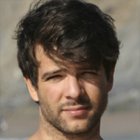
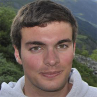

Testemunhos

Franciso Gusmão
"Foi óptimo trabalhar com toda a equipa do TEDxIST, e ter realizado um evento do qual tenho muito orgulho.
Sinto que conseguimos passar inspiração e criatividade,
o meu objectivo desde o primeiro dia de trabalho."

Jorge Saldanha
"O TEDxIST 2014 foi o primeiro evento que organizei. Foi um desafio gigante, mas que valeu a pena, sem qualquer dúvida.
Graças a uma equipa espetacular, com muito empenho, conseguimos realizar mais uma edição bem sucedida.
Espero que o interesse das pessoas se mantenha, este é um evento pensado por alunos e para alunos"
Rui Santos
"Os eventos TED e TEDx proporcionam experiências de interesse e criativas capazes de inspirar o mundo.
Conseguir fazer passar tudo isto pelo Técnico foi, também, uma experiência inesquecível e bem conseguida
graças a uma equipa de pessoas formidáveis."